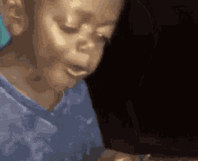

All About Alissa
Paragraph 1
My full name is Alissa Paola Rosario Ramos and I'm 18 years old. My birthday is September 10, 2004, born in the summer but my favorite season is fall. My big three is Virgo , Leo moon, and a Libra rising. I like anime and watching Romance movies, my favorite anime is Naruto. I also like to go to the gym.
Paragraph 2
I really enjoy playing with my two birds, coco and Chanel . My favorite thing to do with them is play videos games online and let them speak to strangers(by speak I mean chirp). Coco was the first one I got. She has a white background with grey and blue feathers. Chanel is an albino parakeet. She has a white coat of feathers and bright red eyes.
Paragraph 3
My favorite group of muscles to work out is the lower body. The lower body includes: the Glutes,Hamstrings,Calves,and Quadriceps.I started the gym after we went into Quaratine because of covid. since then I have being a Gym Rat.